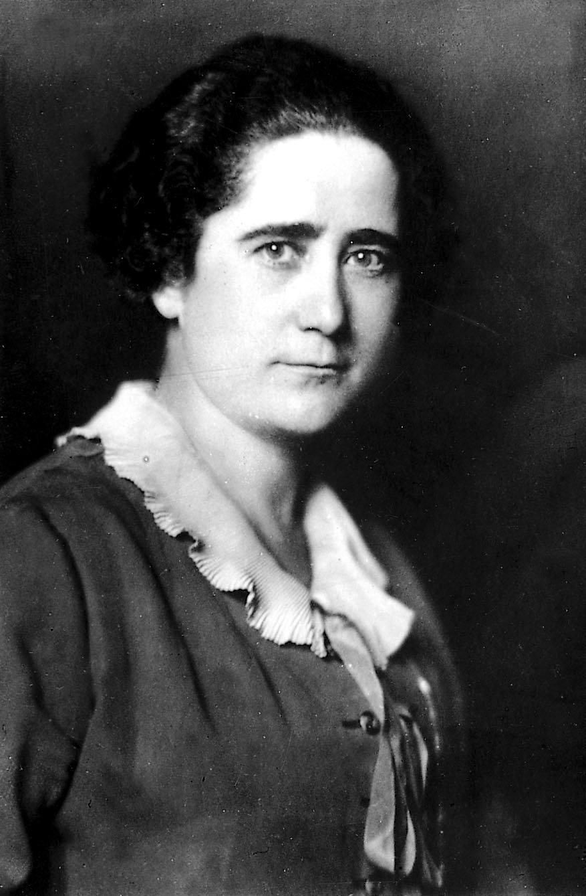

Las Cortes aprueban el sufragio femenino tras el duelo de dos diputadas
Por 161 votos contra 121, la Cámara incorpora el voto de la mujer al proyecto constitucional. Clara Campoamor defendió la concesión inmediata frente a Victoria Kent, partidaria de aplazarla. La paradoja de la jornada: dos diputadas elegidas en unas urnas que las mujeres aún no pueden pisar.

La tarde de hoy quedará señalada en los anales del Palacio de las Cortes. Las tribunas públicas, colmadas desde primera hora, siguieron sin pestañear un debate que no enfrentaba a dos partidos, sino a dos mujeres: doña Clara Campoamor, diputada por el Partido Radical, y doña Victoria Kent, del Radical Socialista. Se discutía si la futura Constitución reconocerá a la española el derecho al sufragio, y el hemiciclo, tantas veces distraído, guardó esta vez un silencio espeso, roto por murmullos y alguna interrupción destemplada. Cuando la presidencia proclamó el resultado, ciento sesenta y un votos contra ciento veintiuno, un rumor largo recorrió los escaños: el voto de la mujer queda incorporado al proyecto constitucional.
La señorita Kent pidió el aplazamiento con palabras graves: no niega el derecho, dijo, sino que teme el momento; a su juicio, la mujer española, apartada durante siglos de la vida pública, podría entregar su papeleta a las fuerzas más conservadoras y volverla contra la República misma que hoy se la ofrece. La señora Campoamor replicó con pasión y con cifras: la soberanía reside en todos los ciudadanos, y no cabe llamarse democracia la que deja fuera a la mitad del país. «Dejad que la mujer se manifieste como es, para conocerla y para juzgarla», reclamó desde su escaño. El duelo, cortés en las formas y durísimo en el fondo, mantuvo en vilo a la Cámara.
La paradoja de la jornada no escapó a nadie: las dos oradoras ocupan escaños que ninguna mujer pudo votar, porque la ley electoral permitió en junio que las españolas fueran elegidas, pero no electoras. Con el artículo aprobado esta tarde, España se dispone a sumarse a Inglaterra, Alemania y los Estados Unidos, donde la mujer vota desde hace años. La votación deparó alianzas imprevistas: los socialistas, en su mayoría, con Campoamor; buena parte de los radicales, sus propios correligionarios, en contra; y más de un diputado confesaba en los pasillos que su papeleta debía menos a la doctrina que a la aritmética electoral que cada cual hace para mañana.
En los pasillos, terminada la sesión, la señora Campoamor fue rodeada, felicitada y también zaherida; cuentan que algún diputado le auguró, entre veras y bromas, que acababa de comprometer el porvenir de la República, y que ella respondió que había cumplido con su conciencia. La señorita Kent abandonó el Palacio con gesto serio, convencida, decía su entorno, de que el tiempo habrá de darle la razón. En las tribunas, mujeres de toda condición siguieron el debate con una atención que conmovía; algunas lloraban al conocerse el resultado. Fuera, en la calle, la noticia corrió de boca en boca con más asombro que estruendo.
Los agoreros anuncian que el sufragio femenino entregará la República a sus adversarios; los entusiastas sostienen que la afirmará para siempre. Este diario confiesa que no lo sabe, y sospecha que no lo sabe nadie, porque nunca hasta hoy se había preguntado su parecer a la mitad de España. Habrá que esperar a las próximas urnas para conocer el rostro político de la electora española. Lo que ninguna elección futura podrá deshacer es lo esencial de esta tarde: que la ciudadanía ha dejado de tener sexo, y que dos mujeres, discrepando con altura, han dado al Parlamento una de sus horas más nobles.